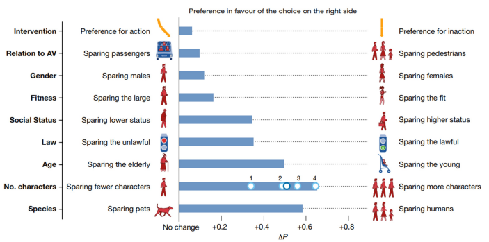

해당 글은 LG에서 지원하는 LG Aimers의 교육 내용을 정리한 것으로,
모든 출처는 https://www.lgaimers.ai/입니다.
AI 관련 윤리와 신뢰 문제
AI and Creativity
GAN -> 창작
AI가 만든 첫 교향곡: Iamus - "Hello World"
저작권이 없는 예술의 시대
Copyright Issues
학습에 사용된 데이터를 제공한 사람에게도 혜택이 돌아가기 어렵다
창작자인 AI는 법적 권리를 제공 할 수 있는 법적 제도가 없다
현존하는 예술가의 스타일을 따라한 예술 작품을 만들 경우 상업적 피해를 준다
창작된 작품이 인간의 윤리적 규범을 따르지 않을 수 있다
아직은 창작물의 저작권은 인간의 고유권한으로 원숭이의 사진은 카메라 주인이 소유할 수 없음 인공지능의 작품 저작권도 현재는 같은 제약을 받음
AI contributed harm
아시모프의 로봇3원칙
첫째, 로봇은 인간을 다치게 해선 안 되며, 인간이 해를 입는 걸 방관해서도 안 된다.
둘째, 법칙 1에 위배되지 않는 한 로봇은 인간의 명령에 복종한다.
셋째, 법칙 1과 2에 위배되지 않는 한 로봇은 스스로를 보호해야 한다.
누구에게 책임이 있는가
소유자 Owner / 우버회사 Uber / AI개발자 AI developer / 운전자 Driver / 자율주행차 The car / 보행자 The pedestrian

로봇의 인격화
로봇을 학대하지 않을 권리: 로봇이 비록 고통을 느끼지 못하더라도 로봇의 학대는 인류에 나쁠 것이라 함 폭력을 보고 연습한 어린이는 추후 사람에게도 폭력적일 수 있기 때문
인간의 창조적 활동 영역으로 들어온 인공지능
AI가 기술혁신과 창작 도구로 활용이 점차 확대됨에 따라, 인간의 개입 없이 독자적 창작과 혁신활동이 가능한 수준으로 발전하리라 전망
AI 시대 지식재산, 법인격, 처벌, 그리고 윤리의 문제 부각
세계적으로 AI에 의한 발명과 저작 등에 대한 법제 정비, 미래 강한 AI가 등장했을 시 법인격을 부여할지 논의, 오동작시 처벌과 윤리 규정을 마련 등이 필요하며, 이러한 논의가 다양한 계층 시민의 수요와 요구를 반영하도록 유의해야 함
AI에 대한 경계와 규제의 선택은 인류에 대한 재정의